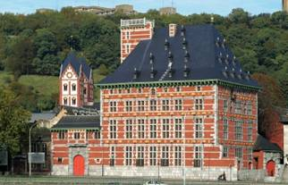
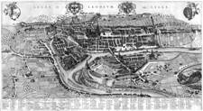

> nieuwsbrief
> 2e trimester
2012
| Bijdragen over: | Tip |
Als verduidelijkt in ons vorig nummer zagen
we
ons verplicht de basisbijdrage op te trekken tot 29 . Vanaf 35
wordt
u als steunend lid geboekt. Deze indexering is, gezien het vlot
verloop van
de ledenher-nieuwing, in ruime mate als noodzakelijk begrepen en
aanvaard.
Waarvoor hartelijk dank.
In de bijdrage is als vanouds het
abonnement op
onze Nieuwsbrief Zannekin en op
het zopas verschenen al 34e Jaarboek
de Nederlanden extra muros begrepen.
Enkel voor wie totnogtoe verstek liet gaan sluiten we bijliggend
andermaal
een betaalformulier in.
Laattijdig
verschijnen
De papieren versie van dit nummer van onze Zannekin-Nieuwsbrief komt er eerst aan
maand na de gebruikelijke verschijningsdatum. Oorzaak daarvan is dat
ook onze
Zanne-kin-studie-uitstap dit keer niet in mei valt maar eerst midden
juni.
Vanaf het derde kwartaal wordt de driemaandelijkse periodiciteit
hersteld.
Zannekin-activiteiten
in
2012
Studiedag te
Luik op zaterdag 16 juni (zie verder in
dit nummer).
Ontmoetingsdag op
zaterdag 29 september te Belle in
Frans-Vlaanderen.
De
streektaal van het
Erkelenzerland en omgeving
De vurige stede Luik
onderging de jongste
decennia een metamorfose en kan heden ten dage terecht pronken met een
tal van
historische blikvangers.

Onze
uitstap kreeg volgend
stramien:
11.30 uur: Verwelkoming met
koffie. in de Taverne de l'Ubivers -
rue des Guillemins 116, 4000 Luik/Liège (tel. (0)-4 253 24 24),
rechtover het NMBS-station Liège-Guillemins.
11.30 uur: Lezingen door Hendrik
Steeger en
12.30 uur: Middagmaal met
Salade Liégoise (groene
bonen met spekreepjes in zurige roomsaus en gebloemde aardappelen) en
koffie of
thee.
13.30 uur: Busrit (lijnbus)
naar de Feronstrée met
rondleiding door de stadskern (het Prinsbisschoppelijk Paleis, het
Perron, het
Huis van Ansembourg). Geleid bezoek o.l.v.
16.30
uur: Café Liégois
in de Taverne de l'Univers -
rue des Guillemins 116, Liège.
Vanaf 17.00 uur: afsluit.
Geschiedenis
Luik door Blaeu
Luik
(Frans:
Liège, Duits:
Lüttich; Waals:
Lîdje) is de hoofdstad
van de Belgische
provincie Luik. De
stad is gelegen aan de Maas,
ongeveer
Halverwege
de 20e eeuw
was Luik het centrum van de mijnbouw en staalindustrie, die Wallonië
tot
welvaart brachten. De economische problemen, die later in de eeuw het
gevolg
waren van de vermindering van het belang van mijnbouw en
staalindustrie, hebben
hun effect op de omgeving van Luik niet gemist.
Luik
telt ruim 190.000 inwoners en is daardoor naar inwonertal de op drie na
grootste stad van België is en waarvan ongeveer 30.000 inwoners een
buitenlandse nationaliteit bezitten. De Universiteit van Luik (Université de Liège,
afkorting ULg) werd
gesticht ten tijde van het Verenigd Koninkrijk
der Nederlanden
onder Willem I
en officieel ingehuldigd in 1817.
De
bijnaam van de stad is
Vele
eeuwen lang, tot 1795, werd Luik geregeerd door prins-bisschoppen.
De
geschiedenis van Luik wordt gekenmerkt door talloze conflicten tussen
de stad
Luik en haar bisschoppen, waarbij het er soms heftig aan toe ging. De
stad
kreeg muren om zich te beschermen en bovenop een heuvel kreeg Luik in
de loop
der tijd een citadel
die verschillende keren herbouwd is.
In
1468 werd in het kader van een dergelijke machtsstrijd de stad
"ge-tuchtigd"
door de Bourgondische hertog Karel de
Stoute. Zijn soldaten heb-ben zich buitengewoon misdragen in
de
stad: ongeveer een kwart van de toen 20.000 inwoners verloor hierbij
het leven.
Toen
de hertogen van Bourgondië en later de Habsburgse koningen allengs
de hele Nederlanden
onder hun gezag verenigden,
bleef het prins-bisdom Luik als onafhankelijke staat daarbuiten.
Tijdens
de Tachtigjarige Oorlog
probeerden de
bisschoppen van Luik neutraal te blijven tussen de twee strijdende
partijen. De
bisschopsstad zelf werd de Beeldenstorm
bespaard, maar deze bereikte wel
onder meer Hasselt
(19
Luik
had zich ontwikkeld tot een belangrijk centrum van metaalindustrie
en ook van de wapenindustrie. In 1794 hebben burgers van de stad Luik,
die
verbolgen waren over het autoritaire optreden van hun bisschop, zodra
de stad
door de Franse revolutionaire legers was veroverd, de gotische Sint-Lambertuskathedraal
gesloopt. De lege plaats daarvan vormt de huidige Place Saint-Lambert.
Onder
het huidige plein zijn na grondige archeolo-gische opgravingen de
fundamenten van
de kathedraal en een Romeinse villa blootgelegd.
In
de 19e eeuw werd de Sint-Pauluskerk verheven tot Sint-Pauluskathedraal.
In 1887 werd
besloten tot de
oprichting van de forten rond Luik.
De eerste
veldslag van de Eerste Wereldoorlog speelde zich van 5 tot
en met 15
augustus 1914 af in de fortengordel rondom Luik. De stad lag op de
Duitse
aanvalsroute door België naar Frankrijk.
Weinigen verwachtten dat België tegenover de
aanzienlijke Duitse militaire overmacht weerstand zou kunnen bieden, en
om die
reden trok het taaie verzet van de Luikse forten wereldwijde aandacht.
De Engelse
krant The Times
schreef: "België heeft zich onsterfelijke roem verworven door het
geloof
in de onoverwinnelijkheid van de Duitse legers te verpletteren."
Grand
Curtius is een museum in
de Belgische
stad Luik.
Een
perroen
(Frans: perron) is een
hardstenen zuil
met daarop een bol in de vorm van een pijnappel
en een kruis.
Perroens
zijn te vinden in plaatsen die behoorden tot het vroegere Prins-bisdom
Luik, vooral in de zogenaamde Goede Steden
(of Bonnes Villes).
In
de stad Luik
markeerde het perron de plaats waar wetten en verordeningen
werden
afgeroepen. Op den duur symboliseerde het perroen autonomie en
zelfstan-digheid,
eerst van de bisschop en later van de stad. In de 14e eeuw mochten alle
Bonnes Villes
van het prins-bisdom een perroen oprichten. Hoei had
al voor 1235 een
perroen. Niet alle plaatsen met perroens zijn Bonnes Villes.
Theux
bijvoorbeeld werd pas later door het prinsbisdom
ingelijfd. Stavelot
kreeg een perroen omdat de prins-bisschop
van Luik ook soms abt-prins van Stavelot-Malmédy
was. Ook Maastricht
heeft een perroen, hoewel deze tweeherige stad
nooit tot de Goede Steden
van het Prins-bisdom behoorde.
In
de 12e eeuw werd het perroen al afgebeeld op munten van de Luikse
prins-bisschop
Henri de Leez (ook: van Leyen). In de 14e eeuw werd het symbool
opgenomen in
het wapen van de stad. Nadat Karel de
Stoute Luik in 1467 had verslagen, liet hij het perroen
afbreken en
overbrengen naar Brugge.
Na de dood van Karel in 1477 werd het Luikse perroen heropgericht.
{kind=link}
{kind=link}